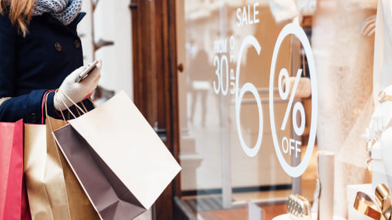

Комплексные решения
Для наиболее удачной работы бизнеса мы разработали готовые решения, которые наиболее оптимально подходят для решения именно ваших задач.
-

Для магазинов
Для оформления товарных отделов часто используют различные виды рекламной продукции и POS-материалы, что позволяет произвести грамотную расстановку товарных групп, так чтобы потребитель смог обойти торговое пространство целиком.
→ подробнее -
Для кафе и ресторанов
Визуальное оформление кафе и ресторанов привлекает наибольшее внимание посетителей и делает заведение узнаваемым на фоне многих других точек общественного питания. А уникальный фирменный стиль заставят возвращаться посетителей снова и снова.
→ подробнее -
Для АЗС
Огромное значение для успешного ведения дел заправочной станции имеет рекламное оформление АЗС. Сделать заправочную станцию привлекательной помогут специалисты Promomix. Обладающие профильными знаниями и опытом выполнения работ в данной сфере.
→ подробнее -
Для аптек
Фирменный стиль аптеки начинается с тщательного анализа территории, на которой располагается торговая точка, ближайших конкурентов и самого помещения. На основе полученных данных определяется оптимальный формат, позиционирование и стилистика.
→ подробнее -
Для салонов красоты
Дизайн салона красоты во многом зависит от его спектра услуг. Уникальная обстановка стала неотъемлемой частью рекламной компании любого заведения. Одной вывески мало, чтобы завлечь и удержать клиентов, так как на рынке подобных услуг жесткая конкуренция.
→ подробнее -
Для торговых центров
Творческое, основанное на знании психологии и маркетинга, оформление торговых центров, становится одним из самых важных инструментов графического дизайна. С его помощью торговый центр можно сделать интересным для покупателей.
→ подробнее